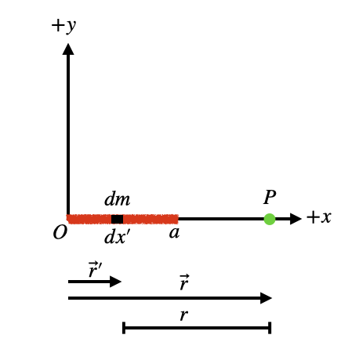

A3.2 Newton’s Law of Gravity - Mass Distributions#
A3.2.1 Motivation#
To know the gravitaional interaction between objects, we will need to know the gravitational field \(\vec{g}\) at the location of an object subject to the field. In many cases, the source objects are spherical systems but there may be times where they are not. In those cases, we will need a tool to determine the gravitational field based on the given mass distribution. There are two approaches:
Apply the gravitional field from a point mass as obtained from Newton’s law of gravity and integrate over the distribution. This is a general approach.
Apply Gauss’s for gravity. This approach is only quantitatively usefull under certain distributions.
In this note, we will focus on approach 1.
A3.2.2 Gravitional Field - Point Mass#
We saw in previous section that the gravitaional force between two objects were
where \(\hat{r}\) is a unit vector of \(\vec{r}\), which is the directed line segment from the source mass \(M\) to test mass \(m\).
With the knowledge that the gravitaional force is also given by
we can define the gravitional field due to a point mass \(m\) as
Alternatively, and often more useful, we can use the definition of the unit vector:
We must be careful applying the above equations as there is no direct connection to the positions of the source mass and the point of interest.
A more general approach that directly ties the position vectors into the gravitional field calculation is often preferred. If we use Equation (2) and insert the actual position vectors for the source \(\vec{r}'\) and the point of interest \(\vec{r}\):
C6.2.3 Solving Strategy#
Set-Up#
There are various approaches to finding the gravitational field from a charge distribution. I am presenting one here that I prefer using.
First, let is write down the infinitesimal mass (behave like a point mass) in terms of the mass density and its infinitesimal spatial size:
Line Mass
Surface Mass
Volume Mass
The form of the gravitational field equation I will be using is:
and the field contribution for the infinitesimal mass is
Methodology#
Below are the steps taken to obtain the gravivational field. The following sections will illustrate some examples of the approach.
Make a sketch. Illustrate the infinitesimal mass, its size, the point P of which we want to know the gravitational field, and positions vectors for the mass as well as the point P.
Write down the mass in terms of the density and spatial size (see section above).
Write down the position vectors for the infinitesimal mass and the point P. This is usually done in a Cartesian \(xyz\)-coordinate system but could also be in cylindrical coordinates (\(r\), \(\theta\), \(z\)).
Write down the distance between the infinitesimal mass and the point P. Express this in terms of the coordinates using Pythagorean theorem.
Insert all the information into Equation 4 above.
Integrate to obtain the g-field. It is acceptable to look up the integral in a table or use computational methods.
Consider a line mass with mass \(M\) and length \(a\) along the x-axis. Find the \(g\)-field at some point along the x-axis outside the mass distribution.
Solution
We consider a line mass with mass \(M\) and length \(a\) along the x-axis. The task is to find the \(g\)-field at some point along the x-axis outside the mass distribution.
Step 1
Make a sketch.
Step 2
This is a 1D line mass, so the infinitesimal mass in terms of the density is
We are given the net mass and the length of the line distribution, so the density is \(\lambda = \frac{M}{a}\), and the infinitesimal mass is
Step 3
The position vector of the source mass is (using 3D Cartesian coordinates):
All the infinitesimal charges have no \(y\) and \(z\) components, and we have
Similarly, the point P has position vector
Step 4
The distance between the two is
Step 5
The gravitational field from the infinitesimal mass is:
Insert the information into the equation for the gravitional field:
We can factor out the unit vector:
Then we divide out the \((x - x')\) factor:
Now we are ready to integrate.
Step 6
We integrate to obtain the full gravitational field:
Let us bring all the constants outside the integral, including the unit vector. The cartesian unit vector is a constant and this step is really important to think about if we are in polar or cylindrical coordinates, where the unit vectors may vary in direction.
The integral can be integrated relatively straightforward by making a substitution \(u = (x - x')\). The differential is \(du = -dx'\) and we have
Using the Power Rule for integration:
Inserting the expression for u back into the solution:
and evaluate at the limits:
In an attempt to simplify, we can use common denominator:
which simplifies to
Step 7
Several items to reflect on here.
There are no \(y\) and \(z\) components of the gravitional field. This makes sense due to the geometry of the problem.
if the point P is far from the line mass, that is, \(x >> a\), then we have
Since \(\frac{a}{x}\) will become very small, it reduces to
That is, far away from the line mass it behaves as a point mass.
Consider a line mass with mass \(M\) and length \(2a\) along the y-axis. Find the \(g\)-field at some point along the x-axis outside the mass distribution.